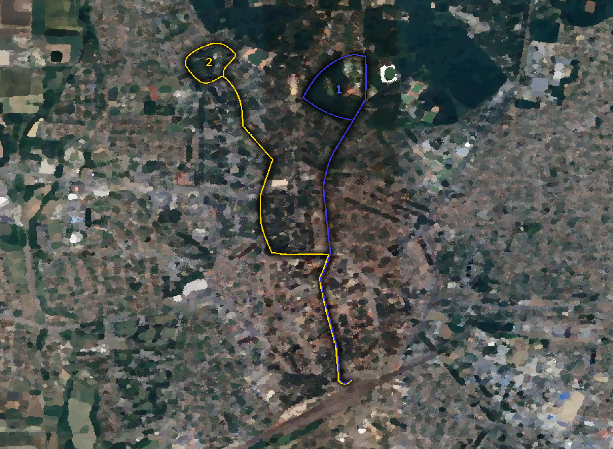
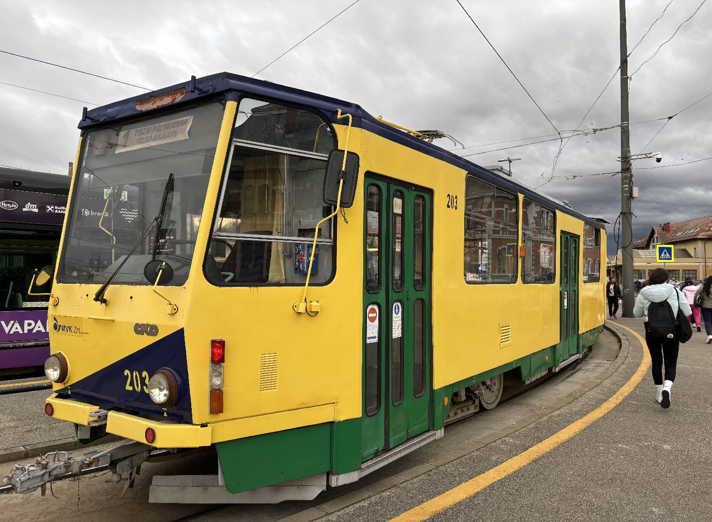
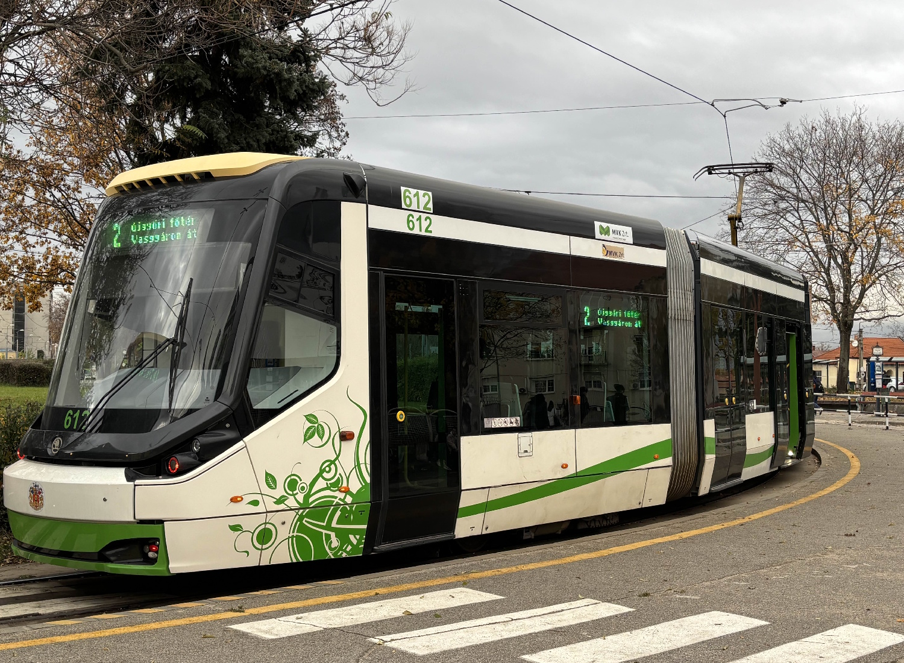
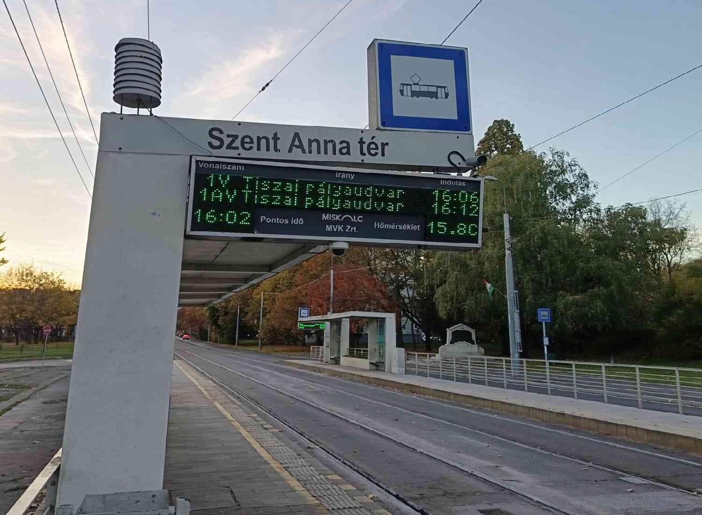
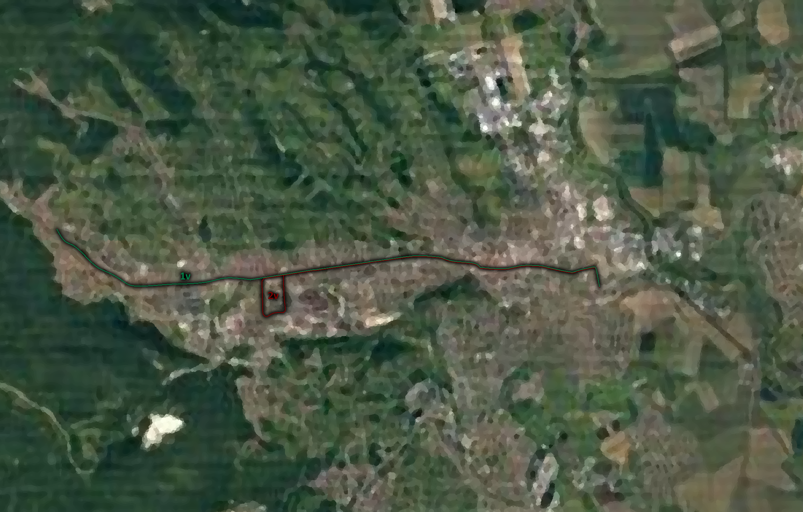
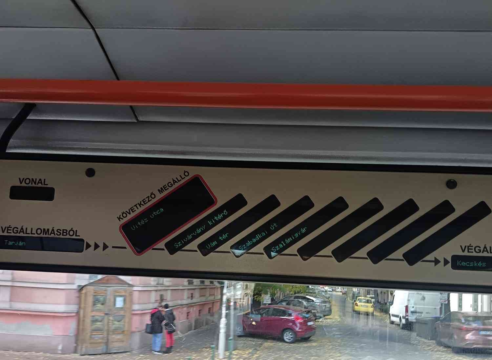
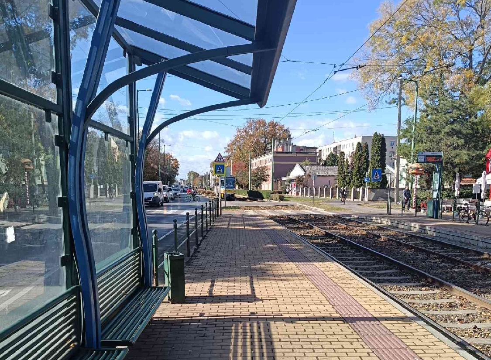
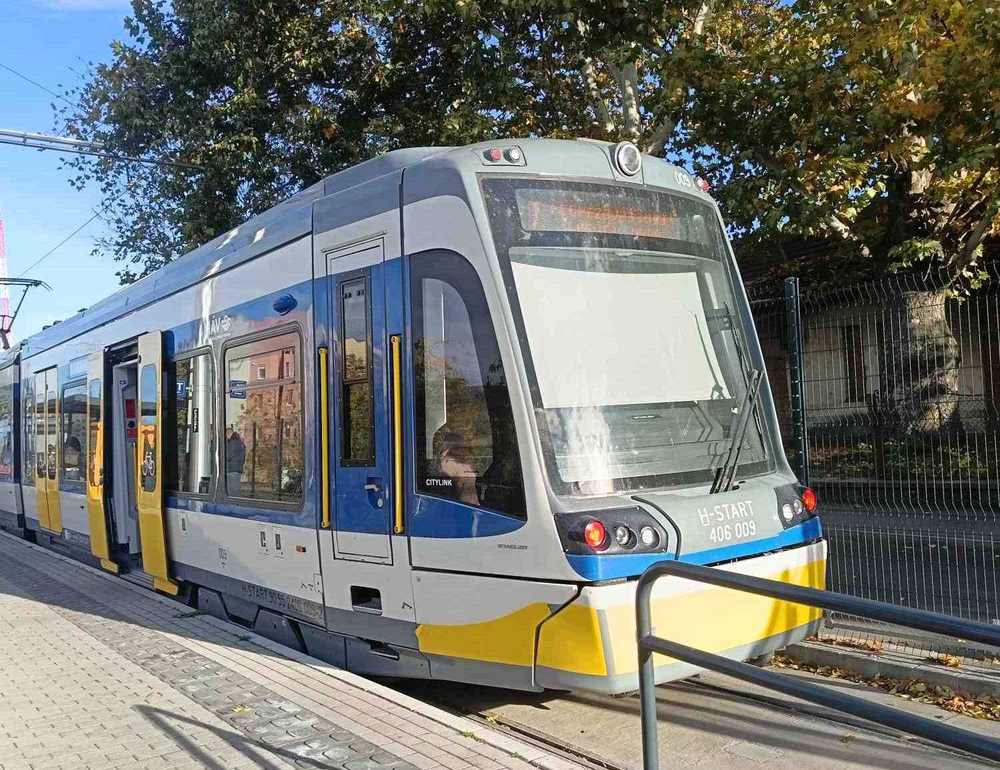
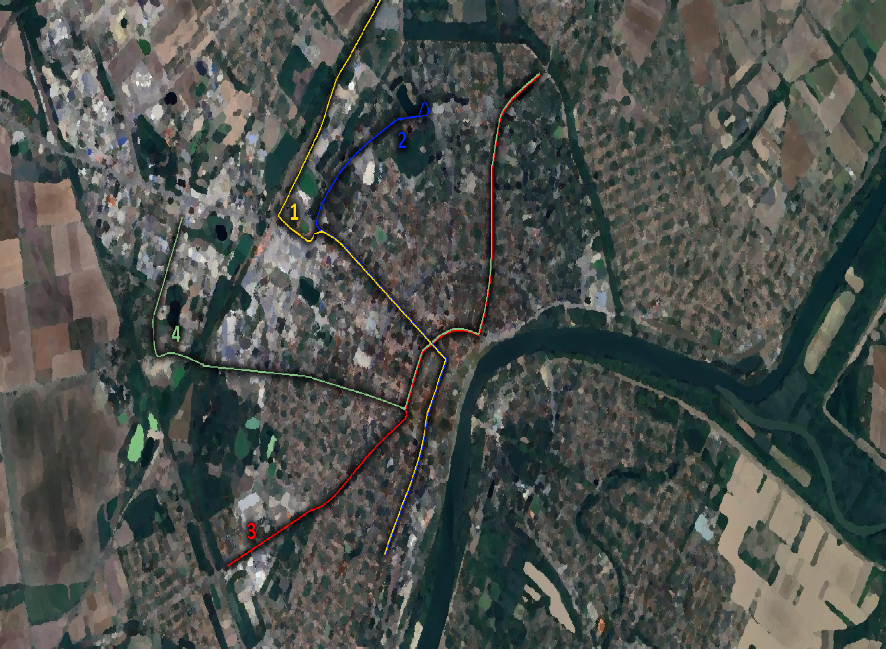
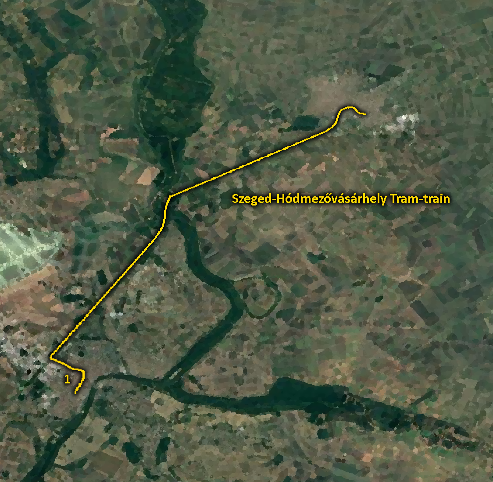

Vidéki villamosvonal-hálózatok szociológiai aspektusainak a kutatása
Fricska Kamilla-2025.10.20.-2026.01.02.
A kutatás kivitelezése
Megvalósítás tekintetében először egy podcast, majd egy dokumentum videó típusú megvalósításban gondolkodtam, de mivel úgy véltem, hogy ezek fognak a populáris technikákká vállni így úgy voltam vele, hogy miért is ne írjak egy weboldalt, ha már rendelkezek egy domain-el, és a barátnőm megtanított webdev-elni.
Maga a projekt kettő kutatási technikát ötvöz, melynek során elutaztam az adott városokba, végig ültem az adott villamosvonal-hálózatokat, közben figyelve az utasokat, a villamosok felszereltségét és egyebeket is. Ezek közben mindegyik esetében megszólítottam kettő fiatalt egy nagyon rövid interjúra. Szóval megfigyeltem, és kvalitatív kutattam
Mindezek az őszi szünet alatt valósultak meg, mindegyik délelőtti órákban, hétköznapokon. Szóval a kutatási napok Szeged-Október 27-e, Debrecen-Október 28-a, és Miskolc-Október 29-e voltak. Magukat az elemzéseket Novemberben készítettem el, a projekt összerakását pedig decemberben.
Az interjúk esetében az interjúvázlatom központi kérdései az atmoszférára, az előnyeire, a hátrányaira, a mit változtathatna rajtuk kérdésekből tevődött össze.
Miért is választottam ezt a témát?
Alapjaiban véve mindig is érdekeltek a tömegközlekedési metodikáknak, főleg a kötöttpályával rendelkezőknek a társadalmi hatásai egy adott területre. Elsősoron abból a nézőpontból adódva, hogy gyerekkoromban, a kisvárosomban a helyi egyetlen busz járattal (ami azóta megszűnt) jártam iskolába, mely a kiszámíthatatlan utak, dugókból adódva többször késtem az első órából perceket. Nos, egy jól kivitelezett villamos által, amelyek valóban némely esetben tudnak késni, de nem abból adódóan hogy beragad az autók közé.
Általánosságban, így mindannyian akik erre a kurzusra jártunk ezen félévben familiárisok vagyunk Budapest villamosaival, hogy milyen egy atmoszférája egy 4-6-nak, vagy hogy milyen korcsoportok töltik meg mikor az 1-est. Ezek ellenében a vidéki, azaz a debreceni, miskolci, illetve szegedi villamosok már más kérdések. Igazából gondolhatnánk azt, hogy teljesen ugyanolyan az összes, sárga, teli, és koszos, de már az első jelző hamis, mivel természetesen Miskolcon zöldek a villamosok. Mellesleg úgy gondoltam, hogy jobban illik ez hozzám, minthogy specifikusan egy járatra fókuszáljak rá.
A kutatásnak a lebonyolítása
Először Szegedre utaztam, ahol először a Vasútállomáson szálltam fel a 2-es villamosra, amin végig, az Európa ligetig utaztam. Ezt követve visszamentem az Anna-kút nevezetű megállóhoz, ahol átszálltam a 3-as villamosra, Vadaspark felé, majd vissza ugyanezen Tarjánba, ahol átszálltam a 4-esre és egészen Kecskésig gurultam, majd vissza a központba, betértem az Árkádba élelmiszer ügyben, ekkor olyan fél tizenegy volt kb.. Ezután visszamentem a vasútállomáshoz, ahol megtörtént a kettő interjú(ekkor még a telefonom mikrofonját használtam, ezáltal annyira kivehetetlenek voltak a hangfelvételek, hogy az elemzés a jegyzeteimből állt össze). Majd felszálltam az 1-es villamosra, ahonnan elmentem egészen Hódmezővásárhelyig. Ezáltal pedig végit is ért ez az első nap.
Másnap Debrecenbe mentem, ahol először felszálltam az 1-es villamosra, azt végigülve ugyanott találtam magamat ahol felszálltam, majd a 2-esen is ültem egy darabig, leszálltam egy kicsit hogy csináljak 1 interjút, már rendes mikrofonnal, és felvettem egy videót. Ezután felszálltam a következőre, és vissza is értem.
Harmadnap elkerültem Miskolcra, ahol a vasútállomáson felszálltam, a központban leszálltam, létesítettem 2 interjút, visszaszálltam, végig ültem, majd néztem hogy mikor tudod a kettessel utazni, nagy meglepetésemre az nem járt a szünetben, de abból adódóan hogy van egy miskolci ismerősöm megkértem rá hogy készítsen róla egy képet, amit el is küldött, szóval nagyon köszönöm neki hogy ennek értelmében mindegyik város esetében készült legalább 3 felvétel. Természetesen visszafelé a másik járattal, az 1A-val utaztam.
Debrecen és Szeged esetében 2 db 60 perces jegyet, Miskolc esetében egy 60 perceset vásároltam a Budapest Go alkalmazásban, mert számomra ez volt a legegyszerűbb metódus.
Általános Történelmi betekintés
Történelmi tekintetben a magyarországi villamosvonal-hálózatok egytől egyig az Osztrák-Magyar Monarchia idején lettek tervezve, és először kivitelezve, hasonlóan más tartományokkal több nagyvárosunk, csomópontunk vált az erőteljes urbanizáció révén tökéletes helyszínné ahol megvalósulhattak ezen kötöttpályás tömegközlekedési formák. A települések közé tevődött a napjainkra fennmaradt hármon kívül még Szombathely, Pécs, Nyíregyháza, és Sopron. Az utóbbi már 1923-ban megszűnt, Trianont követve elvesztette a szerepét, mint központ Bécs, Pozsony és Budapest közti gócpont.
A Kádár-korszak folyamán a tervgazdálkodás révén a villamosvonalak visszaépítésre szorultak, mint az ikarusz buszok hazája inkább azok kerültek preferálásra, ennek következtében a fennmaradtakon kívülieket kivégezték, hiába lehettek kihasználtak és szinte önfenntartóak a létesülésük szembement a központi vélekedéssel.
Történelmi betekintés Debrecen
A villamosközlekedés 1911-ben indult meg, hosszas állammal való csatározást követve. A második világháború során a pálya nagyja újjáépítésre szorult, 56-ban érte el maga a villamosvonal-hálózat a csúcsát azonban a vezetés a 70-es évek során úgy döntött, hogy gazdasági szempontból az 1-es vonaolon kívül mindegyiket megszüntetik, ezeket buszokkal illetve 2 esetben trolibuszokkal pótolták. A kocsik modernizálása a 1997-re csúszott el amikor 11 db KCSV-6-ost adták át ünnepélyesen. A 10-es évek elején összpontosult a debreceni városvezetésben a modernizálás igénye ennek tekintetében, ezért létesítették meg a kettes villamost, melyet a helyiek "másfeledik" villamosnak nevezik, hiszen a Doberdó-utcai köríven kívül szinte ugyanaz a nyomvonala, mint az 1-esnek. Ez mellett 18 CAF villamost is beszereztek ekkor.
Forrás: https://dkv.hu/hirek/406/110-eves-a-debreceni-villamoskozlekedes
Miskolc, és az egy hosszú nyomvonal, majd a hurok
Miskolc viszonylatában értelmezés tekintetében több kisebb vonal egybetételéről beszélhetünk, kettő kisebb vonal szűnt meg, míg a fő vonal úgy ahogy volt megmaradt, mivel ez egy annyira populáris közlekedési forma lett miután a diósgyőri szakasz is teljesen be lett építve így innen ki tudták vezetni a hiányos buszállományokat egyéb városrészekre. Nagy teljesítmény, sok panasz, szinte kizárólag fővárosból selejtezett kocsik jellemezték a járműállományukat, amelyek folyton ebből következve cserélődtek. A nyolcvanas évek során tervezték korszerűsítették legutóbb a pályát, de ez pénzhiány miatt egészen a 2000-es évekig tolódott. A Zöld Nyíl projektként valósult meg az Uniós csatlakozást követve, ami 2015-re ment végbe, ekkorra lettek a Skoda villamosok is beszerezve.
Forrás: https://mvkzrt.hu/az-mvk-rol/rolunk/tortenetunk/miskolci-villamoskozlekedes-tortenete
Az Egyetlen Vidéki pókháló fennmaradása
Szeged esetében a villamossal való közlekedés 1908-ban jelent meg, ami a két vasútállomást kötette össze. Ezt követve jelent meg a többi vonalak a következő év során. Egy hétre 8 villamosvonala volt a városnak, a legtöbb egy vidéki város esetében, de kihasználatlanság miatt a "sűrítő alternatív 8-as járatot" egy hét alatt elkaszálták. Majd részleges leépítés következett, a hatos, a hetes és az ötös járatok megszűntek, ezzel megszünetetve az összeköttetést Újszegeddel, Kiskundorozsmával, és a kisvasúttal is, ami kicsivel ezt követve szintén megszűnt. 98-ban jelentek meg a Tatra-k, 22-re pedig felváltotta az 1-es villamost a Tram-Train Hódmezővásárhelyre, amely egy egyedi metodika országosviszonylatban.
Forrás: https://u-szeged.hu/sztemagazin/hangsuly/szeged-kozlekedesenek
Glenn Yago-The Sociology of Transportation.
Yago lényegében azt fogalmazza meg, hogy a kötöttpályával rendelkező tömegközlekedés közelebb hozza a települések bizonyos szegmenseit társadalmilag kiható tekintetben is, hiszen lehetőséget szolgál, hogy az egyes összekötött városrészek között mozgás létesüljön például munkahelyek viszonyában, mely közlekedés során ezen különböző helyeken lakók közelebb kerülnek egymáshoz fizikailag, biztosan, ezért is gyorsuló tendenciális eleme az urbanizációnak a tömegközlekedés exponenciális bővítése bizonyos esetekben. Ezeknek értelmében sokoldalú a tömegközlekedési metodikáknak a társadalmi hozzávetődései, amik kiterjednek mint populációkat foglalkoztató viszonyulásokra, mind egyénekből kivetülő életmódokra amik szociálisan egységesülnek.
Yago, G. (1983). The Sociology of Transportation. Annual Review of Sociology, 9, 171–190.
G. Simmel-A nagyvárosok és a szellemi élet.
Simmeltől a nagyvárost olyan kontextusban lehet ezzel kapcsolatosan beemelni, hogy értelmezés tekintetében némely pontban az írásának azt gondolhatjuk hogy teljes ellentétét tükrözik a tömegközlekedési eszközök, az egyéni ridegülő létezéssel szemben, miközben a valóságban azt teszi ki nagyjában, hiába utaznak az emberek együtt, mégis távolabb vannak egymástól mintha csak sétálnánk, hiszen a kényelemben ülve egy villamoson napjainkban a telefonjainkban vagyunk elveszve, teljesen kizárva a világunkat, a folytonosan növekvő sietésből adódóan ami jellemzi jelenünket az is lehet hogy valaki azon perceket amik nyugodt bámészkodással tölthetődött volna el, helyette már a dolgait csinálhatja mozgásban is akár.
G, Simmel. (1903). A nagyvárosok és a szellemi élet.
Interjúk-Debrecen
Nem igazán szokta mindennapjaiban használni a villamosokat. Általánosságban viszont az a véleménye, hogy az újszerűek szerinte jók, azonban a régebbi modellek számára túlságosan szűkek. Abból adódóan, hogy csak kettő vonal található Debrecenben így nagyon ritka az hogy használja, hiszen olyan térségben lakik ahova nem jár és csak specifikus céllal válik hasznossá.
Szerinte bővítésre szorul a villamosvonal-hálózat, de arámylag jól van kiépítve. A KCSV-ket lepukkantnak, a CAF-ok okésak. Mindennap használja a villamosokat. Általában zenét szokott hallgatni és kinézni a fejéből. Szerinte estefelé gyakrabban járhatnának.
Interjúk-Miskolc
Ő igazából arról beszélt, hogy életében nem volt a kettes villamoson, és a beszélgetésünk miatt elhatározta, hogy csakazértis fog a jövőben, miután természetesen leromboltam álmait azzal, hogy ma nem is jár. Ő szerinte jó lenne ha lenne egy vonal Tiszaújvárosba, vagy legalább felé, mert gyakran utazik át rokonokhoz arrafelé és utálja a buszokat. Szerinte jók a Skoda villamosok, és bárcsak az összes olyan lenne, nem szokott beszélgetni a villamoson, mert nem tud figyelni a zaj miatt. Az interjú után közölte hogy mégse szeretné, hogy a hangfelvétel megmaradjon, de mondta, hogy nyugodtan írjam ki belőle a dolgokat, és töröljön a hangfájlt, amit megtettem, ezért nincs fent ez ezen a weboldalon.
Szerinte jelenlegiekben a legfontosabb tényező a sínpályának az újratétele lenne, abból indokolva, hogy jelenlegiekben vannak olyan szakaszok, amelyeknek eseteiben csupán 5km/órával tudnak közlekedni a modern kocsik is, amelyek szerinte tökéletesek. Miután leállítottam a felvételt jutott eszébe, hogy jó lenne ha lenne egy hibrid vonat-villamos itt is, az egyik bónusz vonal helyett/mellett amit említett.
Interjúk-Szeged
A legfontosabb problémája az inkonzisztencia az első ajtós villamosokkal volt kapcsolatban, nem értette a szerepét villamosok esetében. Szerinte jó, hogy több vonal is van, melyekből kettőt is gyakran igénybe szokott venni. Az atmoszférát úgy írta le hogy nagyon függ szerinte a vonalaktól, a kettest például kaótikusnak, a négyest nyugisnak nevezte. Ha változtathatna valamit eltörölné az elsőajtózást.
Őt a trolik jobban kiszolgáltatják jelenlegiekben, de nagyon szívesen használna villamosokat mindennapjaiban, csak Újszegeden már egy ideje nincsen villamos. Nem igazán tudott választ adni az atmoszférás kérdésre, inkább arra tért ki hogy szerinte villamost és tömegközlekedéseket fiatalok és idősek használnak nagyrészt mivel ők kevésbé szoktak vezetni, és hogy a városvezetésnek az ő igényeiket kellene beteljesíteniük, ami látszik abból hogy vannak új és "retrós" járatok is. Ha változtathatna valamit újraépítetné az 5-ös vonalat (ami Újszegedre közlekedne a belvárosból).
Debrecen, avagy a másfél villamosvonal
Ahogy felszálltam az egyes villamosra azzal a tényezővel találkoztam, amivel általában Budapesten szoktam, egészen tömött, nagyon sokan okoseszközükkel foglalkoztak kizárva a külvilágot, a kijelző nem megfelelően funkcionált, de hallható volt az utastájékoztatás szóval tudtam, hogy merre vagyok. A járat elején vegyes volt az utasok megoszlása, de ahogy haladt Észak felé egyre nagyobb részt tettek ki egyetemisták, a Veszprény utcától a Nagyerdei campusig senki sem szállt le. Azt követve pedig az egyetemnél kiürült szinte a járat. Pozitívumnak találtam hogy a leszállásjelzőknél található volt braille írás, ami a másik városokban nem volt.
Jóval szellősebb, mint a másik járat, főleg idősek szatyrokkal utaztak, valószínúleg piacról, boltozásból, halk pletykálás rokonokról jellemezte a járatot. Nagyjából a járat indusán leszálltam egy videót felvenni, majd visszaszálltam és teljesen azonos környezet fogadott 10 perccel később is. Jelentős jelenet nem történt ezen a járaton, elég átlagos volt. A belvároshoz közeledve felváltódott a demografikus összkép fiatal felnőttekre kisgyerekekkel, akik főleg az ablakon keresztül nézelődtek. Ennek közben felszállt egy 50-es körüli férfi aki a hátralévő járat alatt végig bámult engem, ebből adódóan egy megállóval korábban leszálltam és a vasút helyett az autóbuszt vettem igénybe. Mindkét járat olyan érzésem volt, mintha senki sem akarta volna igénybe venni a villamost, teljesen barátságtalan benyomást keltett az egész a számomra.
Természetesen Miskolc
Miskolc esetében a legfontosabb felismerhető tényező az hogy a főnyomvonal átszeli az egész várost, ténylegesen látszatra a lehető legjobb ponton lett kivitelezve. A kettes járat csak egy kisebb hurokkal egészíti ki a vonalat. Amikor felszálltam az első észlelésem egy hányás volt, a velem szembeni ajtónál, ami egy számomra egészen idegen látványt képzett. Összességében egészen csendes volt a járat, tisztán volt hallható az utastájékoztatás, és ki voltak címkézve a leszállóhelyek. Egészen halkan lehetett hallani az utasok csevegését, akik eléggé diverzek voltak, nem tudnék megnevezni egy partikuláris embercsoportot, mint Debrecen esetében az 1-esen, ténylegesen, gyerektől, egyetemistán, idősen keresztül, turistákon, vendégmunkásokon, helyiektől mindenkin át rajta volt a járaton. Ezáltal valóban összekötve az egész települést, a belvárost és a külvárost egészen mindenhogy, mintha csak a 47-es villamos lenne Budapesten.
Hasonlóan az előzőhöz, nem volt hangzavar, nyugodt környezet volt, egy kicsit büdös, de összességében egységes. Az volt az érdekes ellenben a másik városhoz, hogy nem voltak ellenőrök, egyik körben sem, a másik pedig az hogy szinte senki se a telefonjában volt, hanem vagy pletykált, vagy csak néztek ki a fejükből, ezzel egy kicsivel közelebbinek érződtek az emberek mint máshol.
Szóval ahogyan korábban is megjegyeztem, teljesen meg voltam lepve hogy ezen járat azon a napon amikor ott voltam egyszerűen nem járt, és valóban szünetekben nem jár ami érdekes a számomra hiszen nem gondoltam volna ezt.
Három méterenként ellenőr Szegeden
Szóval a címből adódik ténylegesen azzal kezdődött a történetem, hogy mutatnom kellett a jegyemet még mielőtt elindult volna a 2-es kezdőállomásáról (Vasútállomás), szerencsére addigra rájöttem hogyan kell aktiválni. Ezzel kapcsolatban rákérdeztem az ellenőrre és elmondta, hogy igen gyakran vannak ide kivezényelve, hogy letessékeljék a jeggyel nem rendelkezőket egy autómatához. Főleg fiatalok, nem helybéliek vették igénybe, egy középkorú férfi útbaigazítást kért, de senki nem tudott segítséget nyújtani, mert senki se volt helybeli. Abban a pillanatban, hogy az ellenőr elhagyta a járatot megindult a nyüzsgés. A kivetítőket reklámok borították, nem utazással kapcsolatos információk, hangosbemondás se volt. Szóval végig kénytelen voltak megnyitva tartani a térkép alkalmazást, hogy tudjam merre vagyok. Érdekes volt amikor menetközben csak úgy kinyílt az egyik ajtó.
A hármas villamos forgalmi okokból késve indult, még a kiíróról is eltűnt mielőtt újra megjelent volna. Teljesen meglepődtem, hogy elsőajtós, a középső ajtónál álltal és nem nyílt ki, annyira kínosan éreztem magamat. Nagyon üres volt a járat, nem igazán történt semmi a városból kifelé haladva, azonfelül hogy megfigyeltem hogy többen is a járaton csak úgy a járaton elkezdtek tízóraizni, ami számomra teljesen idegen volt, hogy valaki egyen egy villamoson, két és félévemet alatt Pesten nem láttam annyi embert enni vilin, mint azon az egy ritkás 3-ason, a központnál fel-le szállt pár ember, de mire a másik végére jutottam egészen kiürült megint.
A 4-es járatot főleg egyetemisták dominálták, a közelemben ácsorgó banda valamilyen zh eredményeket vitattak meg, azt jegyeztem fel hogy az egyikőjük nagyon hencegős volt, ahogy kiért a másik végébe, felcserélődött a demográfia idősekre, és szintén megint kb. csak én ültem végig a járatot.
A Tram-Train egy látvány maga, és a tényező, hogy erre nem kellett külön jegyet vásárolnom az országbérletem mellé megkönnyebbülést okozott. Alapjaiban véve egy más élmény, sokkal kényelmesebb, kevésbé városias atmoszférája volt a tapasztaltakhoz képest, olyan érzés volt az egész járat mintha a gödöllői hév modern kocsikkal közlekedne. Sok ülőhely, az utasok is másmilyenek, inkább középkorúak voltak rajta. Szegeden belül nagyon nagyon zsúfolt volt. A kijelző Stadler Flirt kijelzőkhöz azonosan tartalmazta az összes releváns információt, beleértve késések mértékét. A vonat végében, mint távolsági buszos osztálykiránduláson gyerekek nevetgéltek. Lehetséges az, hogy ez volt a legkoszosabb járat, de nem érződött annyira de annak a pillanatban. Miután elhagyta a járat Szegedet le tudtam ülni. Algyőnél 10 percre megállt a járat bevárni a szemköztit.
Az interjúk, és tapasztalataim összehasonlítása
Nekem a régebbi kocsik az alapvető preferenciáim, számomra hangulatosak, míg a modernebbek túl zordak számomra. Ezzel szemben az interjú alanyok egyetértettek abban, hogy az újabb modellek sokkal tágasabbnak, és tisztábbnak értelmezhetőek, a régiek meg nem komfortosak, "rozogák". Érdekes, hogy mind a három város szinte minden egyes vonalán járhat minden (kivételt képez Szegeden az 1-es, ahol csak a CityLink közlekedik).
Igazából egyértek azzal kapcsolatban, hogy szerintem is a jelenlegi 2 vonal jól ki van építve, hiszem szerintem előnyös a hurkos megoldás, csak akkor van gond, hogyha valaki az ellentétes irányba szeretne menni. Meglepődtem, hogy nem említették meg a leépítést, de azt hogy bővíteni kellene a város egy másik szegletébe is az én kívánságlistámon is szerepel.
Miskolc esetén összességében egyetértek abban, hogy a városnak tényleg ideális a jelenlegi kivitelezés, azonban egy Tram-Train kialakítása itt is egy népszerű koncepció, Észak-Dél irányban, az egyik interjú alany a felvétel után említette, hogy jó lenne egy Kazincbarcikára, a másik pedig Tiszaújvárost említette. Őszintén én is egyetértek a sínpályával kapcsolatosan, ténylegesen érezhető az, hogy idejétmúlt a jelenlegi állapota neki.
Szegeddel kapcsolatban elsősoron szerintem én arra térnék ki, hogy az elsőajtózás megszokható, ahogy néztem online a hármas járatra jellemző csak elsősorban, lehetséges hogy a véleményem torzított hiszen amerre lakok minden busz elsőajtós. Szerintem nem csak az a fontos, hogy mrie térnek ki, hanem arra is ameri nem, ami pedig a Tram-train járat volt, ami valószínűleg a lakhelyüktől való távolságot, vagy csupán a járat túltelítettségéből okolható, és lehet ezek alapján előbb vonat mint villamos.
Összegzés, a kutatás eredményeinek jelentősége
Összegezve teljesült bizonyos szempontokból az amit az elméleti keretben részleteztem a valóságban, bizonyos járatok esetén a különböző demográfiai rétegek találkozásai jelentek meg, bizonyos esetekben meg az adott csoportok célszerű utaztatása. Sok esetben volt megfigyelhető az okoseszközökbe való menekülés a társadalomból, de pozitív csalódás volt a számomra hogy mennyire diverzek az adott városok ebben a tekintetben, hogy Szegeden az emberek konkrétan büfékocsinak értelmezték az egyik járatot, Miskolcon végig csevegtek az emberek erről arról, Debrecenben meg mindenkinek ugyanolyan fejhallgatója volt. Az interjú alanyok többségiben szeretik a villamosokat, és szeretnék hogy több lenne, mivel kiszámítható közlekedési rendszer szerintük is, és sajnálják a félévszázada beteljesülő leépítéseket, teljesen összhangban tértek ki arra, hogy az új járműveket jobban szeretik mint a régieket ami számomra meglepő volt.
Kitekintés, saját vélemény, továbbiak
Jelenlegiekben én perszonálisan elégedett vagyok az eredményeimmel kapcsolatban. Abból adódóan hogy valamelyst meglepőek lettek némely tekintetekben, de bizonyosokban validálódtak a gondolataim, és bárcsak több városunknak lennének kötöttpályás helybeli tömegközlekedési rendszerei amin megfigyeléseket lehetne végezni. Annak tekintetében, hogy mit csinálnák máshogy az lenne a válaszom, hogy több interjút, illetve több időt töltenék el az adott városokban, mert 2-3 végig utazásból egy adott napszakban nem adja át a teljes képet, ha egy tavaszi félév során kellett volna ezt teljesítenem biztos több napot, mindegyik város esetében egy hétvégi napot is rászántam volna, mert az utazótábor teljesen más egy szombaton mint egy kedden.
Videófelvételek, képtár
A kutatással kapcsolatban több képet, videót készítettem, amikkel részletekben vizuálisan is megörökítettem eztet.
Debrecen 1-es villamos-CAF
A felvételen látható, hogy az 1-es villamosnak egyik járatán az utastájékoztató kijelző nem funkcionál rendeltetésnek megfelelően.
Debrecen 2-es villamos-CAF
Ahogyan a kettes villamos érkezik a Csokonai Vitéz Mihály Gimnázium nevezetú megállójába.
Debrecen 1-es villamos-KCSV-6
Megtapasztaltam egy régebbi, KCSV-6-os villamosnak a látványát a Nagytemplom közelében.

A debreceni villamosvonal-hálózat térképe

Miskolc 1-es villamos-ČKD Tatra

Miskolc 2-es villamos-Škoda 26T

Szent Anna tér villamos megálló

A miskolci villamosvonal-hálózat térképe

Szeged 3-as villamos következő megállókat mutató kijelzője-ČKD Tatra

Szeged 4-es villamos Kálvária tér megállóból fotózva-ČKD Tatra

Szeged-Hódmezővásárhely 1-es villamos(Tram-train)-Stadler CityLink

A szegedi villamosvonal-hálózat térképe

A Tram-train térképe
Interjúk
A kutatás során 6 darab interjút készítettem, helyi fiatalokkal. Három, itt lentebb meghallgatható.